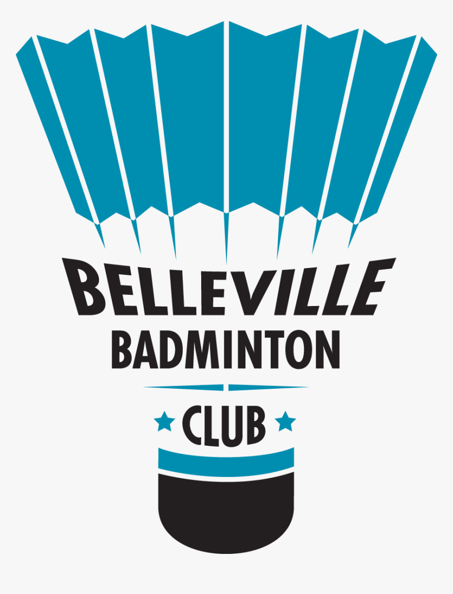
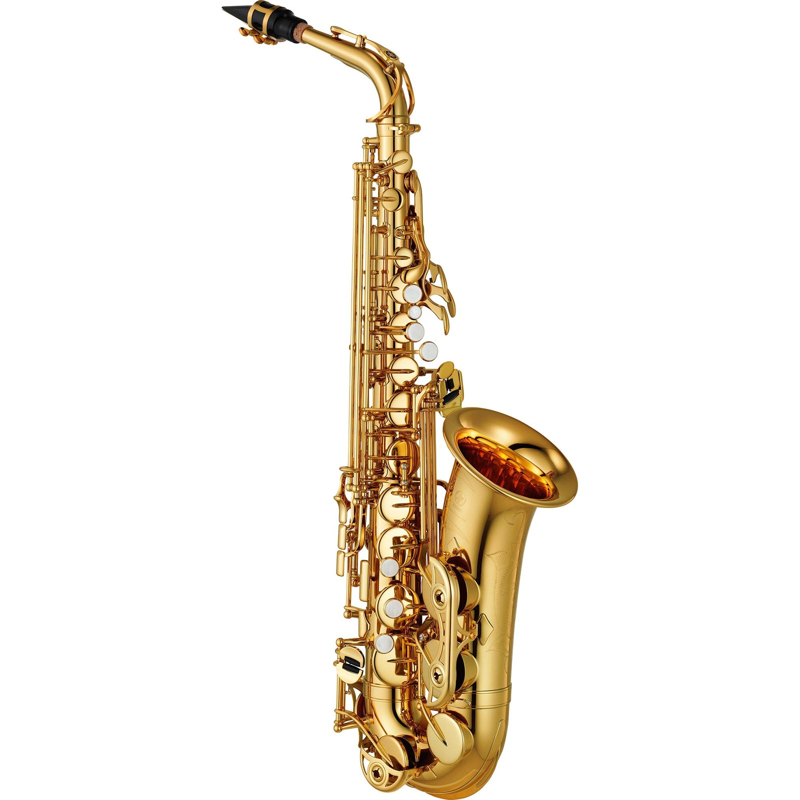
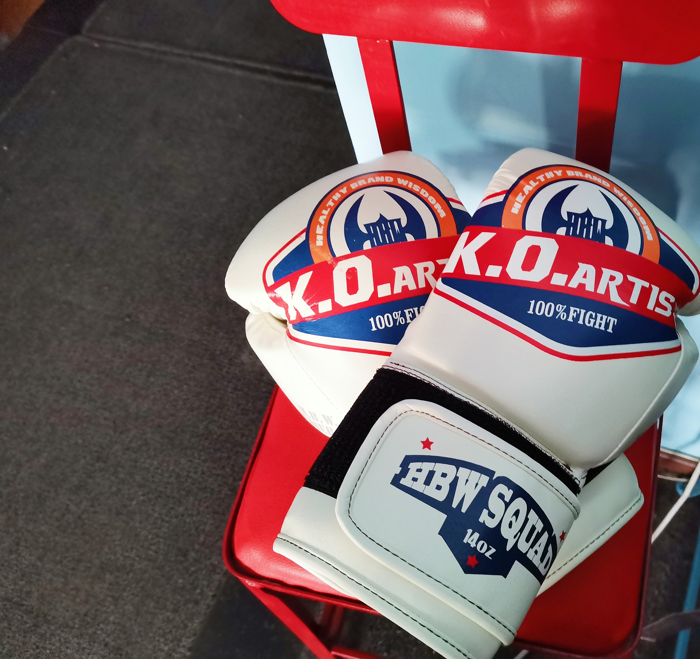

I'm currently a master student at University of Pennsylvania, major in Computer Science.
In the summer of 2021, I graduated with a B.A. degree in Business Statistics & Accounting from Peking University. Though not directly related to computing, such background shaped me to be a better
teamworker, equipped me with agile business sense that contributes to product developing and user insights.
Previous working experiences as a technology consulting intern and a data scientist intern helps me confirm my supreme passion in molding myself towards a
lifelong-learning Tech person.
Facts About Me
Educations
Undergradute 4 years at Peking University, studying Business Statistics and Accounting.
Coursework: Linear Algebra, Calculus, Intro to Porbabilty & Statistics, Business Forecasting Analytics, Stochastic Analaysis, Regression Analysis.
2021.8 - present Right now, a first year graduate student at Penn's School of Engineering, major in Computer Science.
Coursework: Algorithms & Computation, Intro to Software Development, Data Structure & Software Design, Big Data Analytics, Computer System Programming.
Professional Experience
JD.COM, Inc., Data science internSummer 2020
JD.com is an e-commerce company ranking 59 among Fortune global 500, with annual revenue above $110 billions.
I assisted in structuring a monitoring model with SQL for detecting and diagnosing abnormality in advertising activities, the model helped preemptively rectify advertiser’s unsustainable strategies and improve ROI by 6%.
Boston Consulting Group, Technology consulting internSpring 2019
Scraped 1000+ user reviews off 15 language teaching websites, utilized NLP toolkits nltk, matplotlib with python to extract each website’s product features and cons, optimizing our client’s marketing decision.
Helped an automobile group in improving its branding strategy via conducting expert interviews, conduct 10+ A/B tests basing on 1500+ questionnaire results.
Interests
Skateboard

Badminton

Saxophone

Boxing
My Projects
Back End Development
Implement two user-interactive game projects' back-end functionality utilizing Java and Eclipse. The Battleship Game and the Blackjack Solitaire Card Game are two logic games that test players’ optimization strategy. SKILL: Java
Data Science
Employ various scalable toolkits to implement a prediction analysis on whether an applicant’s Permanent Labor Certification application will get denied or certified. SKILL: Python, Pandas, SQL, Machine Learning
Front End Design
A responsive homepage for an app Tindog, an application that helps dog owners find friends or mates for their pets. SKILL: HTML, CSS, Javascript, BootstrapV5.0
Computer System
Build a LC4 assembler and disassmebler (CPU) from scratch, which is able to transform C code to assembly lanaguage and further to machine lanaguage and vice versa. SKILL: C programming, Aseembly language, Codio
Get In Touch
"When one tugs at a single thing in nature, he finds it is attached to the rest of the world." -- John Muir. Let's chat and get connected!